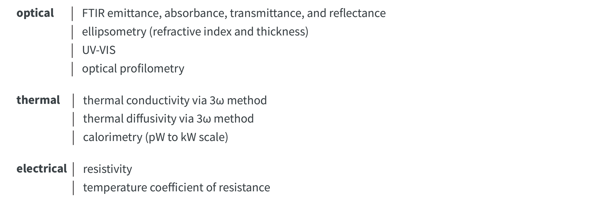

Hi, thanks for visiting my site! I am an extremely dedicated scientist that is passionate about solving challenging research and engineering problems with creative solutions. My expertise is in studying light and heat transfer at the nanoscale and desinging new materials with the goal of improving the next generation of energy conversion and sensing technologies. I thrive in leadership roles but also can be a great team member. Lets connect!
Publications
S. McSherry*, M. Webb*, J. T. Heron, A. Lenert, et al.
Nanophotonic control of thermal emission under extreme temperatures in air
Nature Nanotechnology
2022
S. McSherry and A. Lenert.
Design of a gradient epsilon-near-zero refractory metamaterial with temperature-insensitive broadband directional emission
Applied Physics Letters, Editor’s Pick
2022
S. McSherry, J. Barreda, and A. Lenert
On-chip infrared spectroscopy with near-field thermal sensing
In preperation For now, see poster here
2022
S. McSherry and A. Lenert
Extending the thermal near field through compensation in hyperbolic waveguides
Physical Review Applied
2020
S. McSherry, T. Burger, and A. Lenert
Effects of narrowband transport on near-field and far-field thermophotonic conversion
Journal of Photonics for Energy
2019
S. McSherry and A. Lenert
OPTICHEM: A python package to extract refractive index from attenuated total reflectance measurements
Python Package on GitHub, Paper in preperation
2019
M. Webb, S. McSherry, J. T. Heron, A. Lenert, et al.
Geometric defects induced by Stranski-Krastanov growth in thin film oxide superlattices
Journal of Applied Physics
2022
B. Roy-Layinde, T. Burger, D. Fan, B. Lee, S. McSherry, S. Forrest, A. Lenert
Sustaining efficiency at elevated power densities in InGaAs airbridge thermophotovoltaic cells
Solar Energy Materials and Solar Cells
2021
D. Fan, T. Burger, S. McSherry, B. Lee, A. Lenert. S. Forrest
Near-perfect photon utilization in an air-bridge thermophotovoltaic cell
Nature
2020
H. Kim, S. McSherry, B. Brown, A. Lenert
Selectively enhancing solar scattering for direct radiative cooling through control of polymer nanofiber morphology
ACS Applied Materials & Interfaces
2020
Skills
I have developed a broad and robust technical skillset in nanofabrication, materials characterizaion, instrumentation, and computational modeling. As one of the first graduate students in my research group, I was in charge of getting the lab off the ground. During this time, I developed a passion for methodolgy and experimental design. Please see the following sections for more details on my skills.
- Nanofabrication and Cleanroom Processes
- Materials Characterization
- Instrumentation and Data Aquisition
- Computational Modeling and Optimization
Nanofabrication and Cleanroom Processes
Materials Characterization



Instrumentation and Data Aquisition


Computational Modeling and Optimization
Press
Here are blurbs about my research in the news!
Leadership & Outreach
Throughout graduate school, I have contributed to our wonderful chemical engineering community in several ways. For two years in a row, I was selected to be a graduate student peer mentor. In this role, I led weekly classes for 6 - 7 first year students to help prepare them for their Doctoral Candidacy Exam. In the image below, my group is celebrating the Lunar New Year!

Outside of mentoring, I was an active member on the ChE diversity, equity, and inclusion curriculum team. Here, I develop new homework lessons that incorporated lessons on the broader societal impacts of chemical engineering, while still testing rigorous technical concepts. As an initial team member, I was responsible for developing homework sets for the undergraduate fluid mechanics course. The success of this initiative has led to new departmental funding for this team. If you are curious about this initiative, please reach out. I would be happy to share our problem sets.
I have held several other hats, including outreach chair of the chemical engineering graduate society, and the recruitment chair!